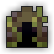
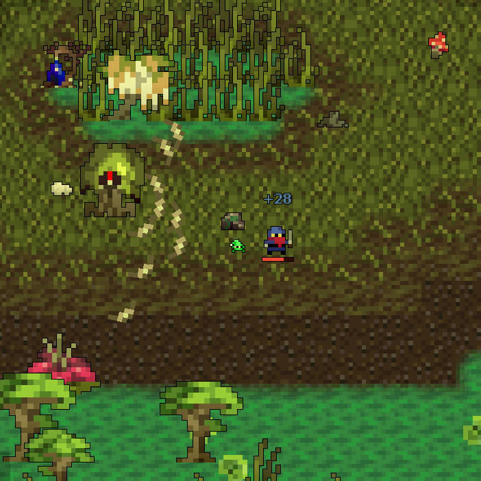
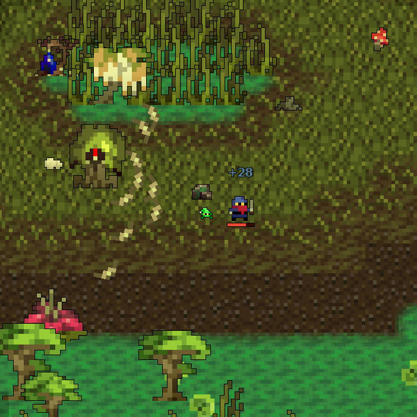
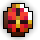
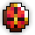

| Last updated: Exalt Version 6.1.0.0 (Sep 2025) |
|---|
|  |
| Dust Drops | ||
|---|---|---|
| 35-41 |
45-51 |
0 |
The Sulfurous Wetlands is a high-level dungeon intended to be roughly the same difficulty as the Epic Dungeons (The Crawling Depths, Woodland Labyrinth, Deadwater Docks). This dungeon is a source of various stat increase potions. It is also the source of the untiered Brambletooth Tachi, Bogwood Crook, Warped Mantle, Sulfuric Stone and Thistleleaf Necklace.
The portal to Sulfurous Wetlands has a chance to drop from Bulbous Perforator, Green Fingers, Elder Ent Ancient and Grand Dragonfly. It is also guaranteed to drop from The Plague Doctor.
This dungeon must be completed to earn ‘Travel of the Decade‘, ‘King of the Mountains‘, ‘Hero of the Nexus’ and ‘Realm of the Mad God’ fame bonuses.
| The Realm Eye says: |
|---|

What was once a quaint village has been reduced to rubble. Yet another victim to Lord Ruthven’s ever-spreading corruption, the Sulfurous Wetlands were home to a regular village nestled within a swamp. The Heart of the Wetlands was once the willow tree that stood tall in the center square for generations. Its mere presence was something many of the citizens held dear. Though the Wetlands are too far gone, maybe you can stop Oryx and his subordinates to ensure nowhere else in the Realm shares the same fate as this village? |
 The Sulfurous Wetlands Key is available in the Nexus for 100
The Sulfurous Wetlands Key is available in the Nexus for 100  .
.
The Sulfurous Wetlands Guide is currently a work in progress.
Players spawn in a large circular room with the inactive treasure room boss in the middle. The dungeon itself is a network of marshes surrounded by hazardous Acidic Swamp Water (which may also pool within the rooms), connected by bridges that may have holes filled with more Swamp Water. Derelicit rooms with Mossy Chests can be found frequently, and Cursed Fruit can be found growing all over the platforms, which have a variety of effects when destroyed.
Many enemies in the Wetlands are notably sedentary, with many only retaliating or revealing themselves when getting close, and many others being totally stationary.
A treasure room activator is a guaranteed spawn in each instance of the dungeon. Only one treasure room can spawn.
 
 
The Sulfurous Wetlands is part of the Mighty Quest pool from The Tinkerer and has associated quests.
| Name | Description | Items Needed | Reward |
|---|---|---|---|
| Arboreal Adventurer | Eradicate the Heart of the Wetlands, the Fountain Spirit and the Murderous Megamoth! |     |
  |
| The Cursed Heart | Defeat The Heart of the Wetlands in the Sulfurous Wetlands. | |
|
Patience is the name of the game in this dungeon; rushing is extremely dangerous due to the numerous enemies that only show themselves when approached too closely. Additionally, many of them can inflict a variety of debuffs, most notably Silenced, Paralyzed and Slowed. Being inflicted with either debuff while rushing can often lead to a quick nexus or even death.
On the contrary, range classes excel in this dungeon, as many of the enemies are stationary and do not have particularly devastating attacks. All classes, especially melees, should be mindful of the minimap, as enemies can be incredibly difficult to spot while clearing. All enemies appear on the minimap, which gives their position away, most notably the Bog Jaws and Swamp Stalker.
It is more efficient to defeat the boss first rather than looking for the Gilded Fruit that spawns anywhere on the map. Defeating the Heart of the Wetlands will reveal the location of the treasure island with a bright yellow icon if it has not already been activated.
DO NOT IDLE in this dungeon, especially at spawn. Sulfuric Centipedes can wander around the map despite their location not being loaded, and they can sometimes make their way to spawn and attack any player unfortunate enough to go idle. The Warped Ent Ancient, the treasure boss of the dungeon, is also located at the dead center of spawn, and will quickly kill any slacking players should another destroy the Gilded Fruit.
This dungeon was added in Exalt Version 3.2.0.0 (Oct 2022). Its lead developer was MOONSHOOT, a member of UGC.
Before Exalt Version 5.11.0.0 (May 2025), dungeon completion gave 55-128  with 60% chance and 18-42
with 60% chance and 18-42  with 50% chance.
with 50% chance.
Before Exalt Version 5.12.0.0 (June 2025), dungeon completion gave 32-38  and 36-42
and 36-42  .
.


{kind=link}